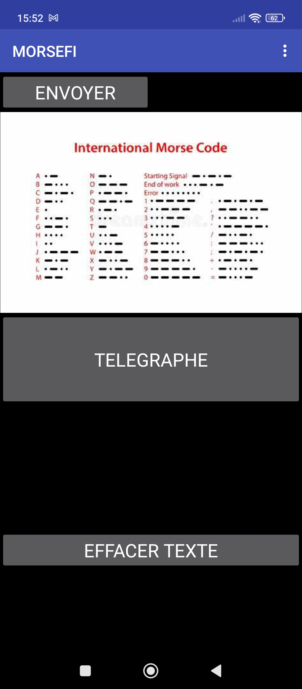
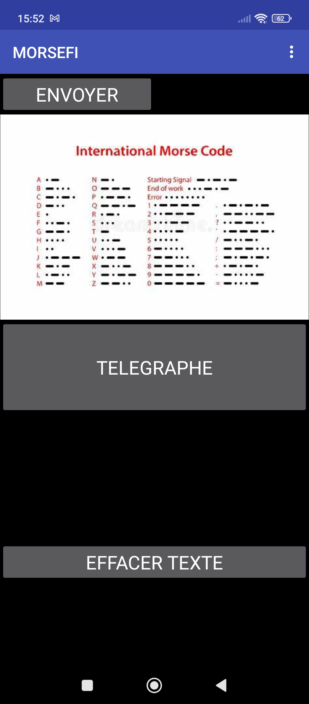

📱 MORSFI – Communication Morse Lumineuse & Sonore
Un retour aux fondamentaux. Dans ta poche.
MORSFI transforme ton smartphone en appareil de communication morse, aussi bien lumineux que sonore. Que tu sois en terrain hostile, en mode furtif, ou simplement curieux de redécouvrir ce code ancestral, cette appli est ton alliée pour des échanges clairs, efficaces… et silencieux.
🌱 Genèse du projet
L’idée de MORSFI m’est venue en pleine nuit, lors d’un concert quand j'ai vu les gens jouer avec la led de leurs telephone portable. J’avais mon téléphone, une LED, et une vieille envie de bricoler avec du morse. Pourquoi pas utiliser ce langage universel ?
L’objectif était simple : faire une appli légère, fonctionnelle, utilisable sans réseau ni installation complexe. Un outil minimaliste mais utile, capable d’envoyer un SOS ou de transmettre un message à distance, via flash ou son. Et surtout : une appli qui fonctionne même en mode avion.
⚙️ Fonctionnalités
💡 Émission lumineuse (Flash)
Utilise la LED de ton smartphone pour envoyer un message en morse visible à distance. Idéal en signalisation nocturne ou en communication visuelle discrète.
🔊 Transmission sonore
Le téléphone émet les bips typiques du morse pour transmettre des messages audibles. Fonctionne même avec un simple haut-parleur, dans un environnement isolé.
✍️ Télégraphe virtuel
Tape ton message, appuie sur envoyer, et l’appli le code en morse. Tu peux aussi t’entraîner à taper toi-même en rythme comme un vrai opérateur.
🖤 Interface minimaliste
L’interface est volontairement dépouillée, pensée pour une lecture rapide, une ergonomie efficace, et une utilisation en conditions extrêmes (nuit, gants, stress).
📱 Compatibilité Android 7+
L’appli est optimisée pour fonctionner sur un maximum de téléphones, même anciens, sans fonctionnalités superflues ni pub, ni tracking.
📸 Captures d’écran
 

🧰 Pourquoi ce projet ?
MORSFI n’a pas été conçu pour « faire comme les autres apps ». Il s’agit d’un projet de passion, une réponse à un besoin simple : pouvoir communiquer en silence, sans réseau, avec juste un téléphone. À l’heure du tout-connecté, il est bon de revenir parfois aux bases… surtout quand elles fonctionnent toujours.
Cette appli, c’est un clin d’œil au passé, mais aussi une vraie solution de secours ou d’initiation. Que tu sois radioamateur, survivaliste, randonneur ou juste curieux du code morse, MORSFI est là . Sobre, fiable, et prêt à faire clignoter tes mots.
« Quand il n’y a plus de réseau, il reste le rythme. »